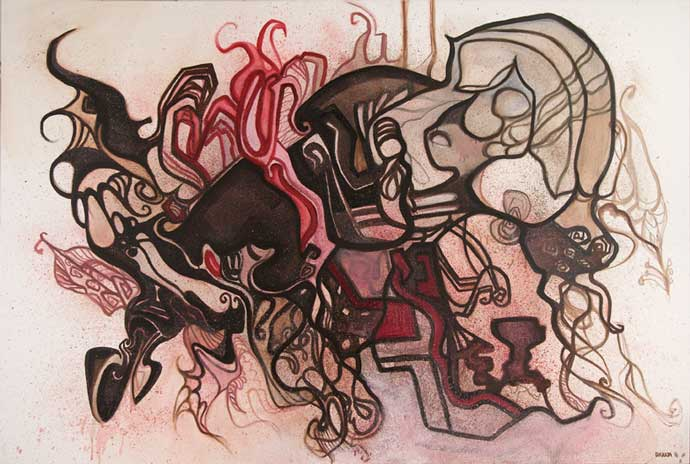

SERIEN «MENNESKELIG – GANSKE ENKELT»

”Serien er et forsøk på å dykke inn i menneskets rike indre liv: følelser, lidenskap, små tegn og også det
ubesvarte
og uutforskede.”
SERIEN «STED NORGE»
”Sted er en viktig og kraftfull komponent i den menneskelige identitet. Gjennom min kunst ønsker jeg derfor å
utforske ulike steder som mitt hjerte føler nærhet til, og derigjennom å utrykke denne opplevelsen.”
SERIEN «STED LITAUEN»
Egle – slangedronningen
Symboler. Historie. Nåtid. Eventyr.
«PORTRETTER»
Portrait of D&M
«PEN SERIES»
Pen series
Weirdoes…
Inspirasjon til serien Menneskelig – ganske enkelt.
Klikk HER for å se flere bilder!